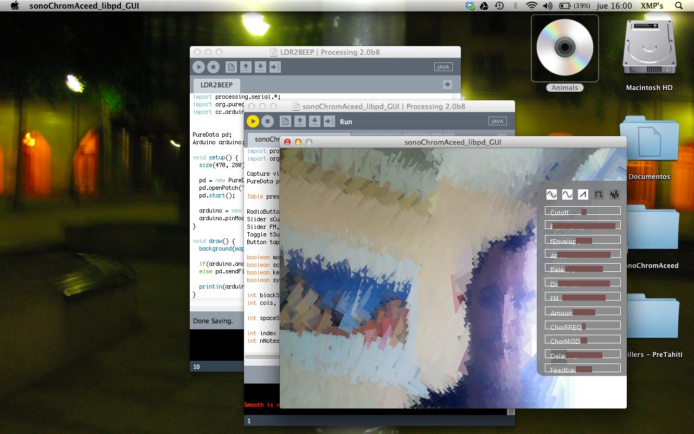

The lore
Born from a dream about a cyborg
Neil Harbisson was born with achromatopsia — he sees the world entirely in greyscale. So he implanted an antenna that translates colour into sound, with green tuned to 440 Hz, the middle of the visible spectrum. He became the first person officially recognised as a cyborg by a state, learned to hear colour, and turned his condition into his art.
Around the same time, I was building something adjacent: a Holophonic User Interface — spatial sound that let blind users hear where the icons were on a screen and navigate towards them. It won a business-ideas contest and became my degree thesis. It never shipped. But it left an idea humming in the back of my head.
“I can hear colour.” — Neil, in the dream
“I can make people hear where things are in a virtual space.” — me, in the dream
I woke up thinking: so what if you could hear where the colours are?
That dream really happened. What followed was a Processing sketch that grew into a beautiful little monster: the camera feed crushed into fat pixels, each one rotated by its hue until the image looked almost cubist, while a Pure Data synth underneath sang whatever the colours told it to — quantized to a musical scale, so it was always harmonic, never noise. The scale-quantizing idea came from another project of mine: a one-string bass you could lock to any scale and improvise on like a virtuoso.
The Processing monster
A sketch grows out of control but works. Camera in, cubist pixels out, libpd singing underneath.

It sounds like music
One holiday of stubborn coding later, colour is melody, quantized to a scale, surprisingly nice to listen to.
Reborn in Kotlin
Ported to Kotlin and Jetpack Compose with Claude Code as copilot. Blob detection, convex-hull shards, mortar gaps — it finally earns the name Trencadís, after Gaudí's broken-tile mosaics.
A camera that jams
MIDI clock in, notes out. It locks to your DAW and arpeggiates in rhythm and harmony with the rest of the band.